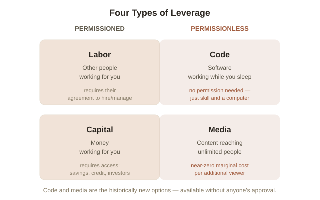
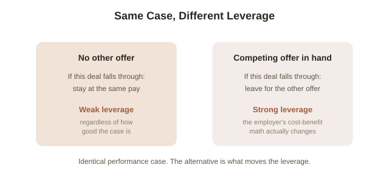

Chapter 1: Four Types of Leverage, and What Actually Sets Your Bargaining Power
Two people can work equally hard, be equally skilled, and end up with wildly different incomes — not because one is smarter, but because one of them is working with leverage (a way to multiply the output of your effort or judgment beyond the hours you personally put in) and the other is trading hours for money directly. This chapter is about how leverage actually works, not as a motivational slogan, but as a specific, analyzable set of mechanisms — and about a separate, equally concrete lever most people underuse: how much real bargaining power you actually have in any negotiation.
Why labor alone doesn't scale
If your income is a direct function of hours worked — an hourly wage, most salaried work, most freelance billing — there's a hard ceiling on it no matter how skilled you get: you only have so many hours, and each one only pays once. Getting better at the work raises your rate, but it can't break the underlying structure, because your output is capped at (hours) × (rate). Leverage is any mechanism that decouples output from hours — where the work you do once keeps producing value without you doing it again.
Four types of leverage, and why two of them changed recently
Investor and entrepreneur Naval Ravikant laid out a widely-cited framework for this: leverage comes in four forms, and they split into two very different categories. Labor (other people working for you) and capital (money working for you) are permissioned leverage (someone else — an employer, an investor, a bank — has to grant it to you). Historically these were the only real options, and they required either an existing fortune or an existing position of trust and authority — which is a large part of why, for most of history, leverage compounded mainly for people who already had some.
Code and media are different: permissionless leverage. A piece of software, once written, can serve a billion users without asking anyone's approval to scale. A YouTube video, a blog post, or an open-source library reaches its thousandth viewer at essentially the same marginal cost as its first. Nobody has to grant you a loan or a promotion to access either one — you just need a computer and the specific skill to use it. This is genuinely new in economic history: the internet made two entire categories of leverage available to essentially anyone, not just people who already had capital or organizational authority.

Why leverage alone isn't the whole story: specific knowledge and accountability
Leverage multiplies whatever you apply it to — including bad judgment, at scale. A media platform amplifying misinformation, or capital deployed on a plan nobody has properly evaluated, shows the failure mode plainly: leverage without good judgment just produces large, fast mistakes instead of small, slow ones. Two things keep leverage pointed in a useful direction. The first is specific knowledge (knowledge you couldn't have gotten purely by training for it — usually built from an unusual, personally-specific combination of skills or interests): skills that can be taught in a standard curriculum get commoditized and competed down in price, almost by definition, because anyone can go get the same training. The second is accountability — putting your own name and reputation visibly behind a decision, rather than hiding behind a committee or a diffuse process. Genuinely well-compensated leverage tends to require both: apply real, hard-to-replicate judgment, and be willing to be personally on the hook if it's wrong.
The other lever: what BATNA actually means for a negotiation
Separately from leverage-as-scale, there's leverage-as-bargaining-power, and it has a precise definition, not just "confidence" or "assertiveness." Negotiation researchers Roger Fisher and William Ury, in their influential book Getting to Yes, formalized it as BATNA (Best Alternative to a Negotiated Agreement — literally, what you'll do if this specific deal falls through). Your actual bargaining power in a negotiation is set almost entirely by the quality of your BATNA, not by how well you argue. Someone asking for a raise with zero other job prospects has a weak BATNA — the alternative to getting the raise is staying at the same pay, which the employer already knows — no matter how good their performance case is. Someone asking with a real competing offer in hand has a strong BATNA — the alternative to getting the raise is leaving, which changes the employer's actual cost-benefit calculation, not just the emotional tone of the conversation. Improving your BATNA before a negotiation (building the competing offer, the alternative buyer, the fallback plan) is usually worth more than any amount of in-the-room technique.

Try this
Ideas for noticing or testing this in your own life.
- Audit your own income structure: what share of it is capped at (hours) × (rate), and is there any piece — a skill, a piece of writing, a tool, a process — that could be turned into something reusable instead of redone every time?
- Before your next negotiation of any kind — salary, a purchase, a favor — name your actual BATNA out loud first: what specifically happens if this doesn't work out? If the honest answer is "not much changes," that's the thing worth improving before the conversation, not during it.
Worth pulling on?
A few loose threads from this chapter — if any of these genuinely grab you, that's a good sign of where to go next.
- Specific knowledge as a concept overlaps directly with what makes expertise economically valuable, not just personally satisfying. → Already in the library: Expertise and Deliberate Practice covers how that kind of hard-to-replicate skill actually gets built.
- Why capital income (leverage from money) tends to compound faster than labor income over time — a real, well-documented pattern with major implications for wealth inequality, not covered in this chapter. → A natural chapter 2 for this topic, if you want to go deeper here.